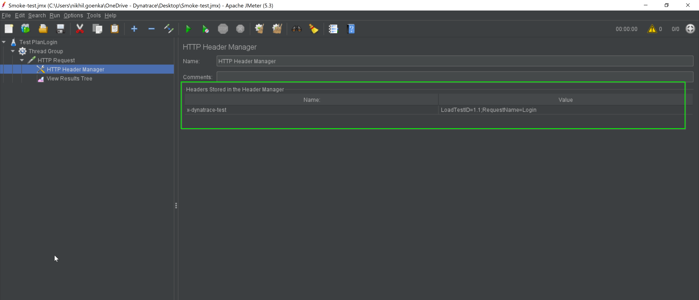
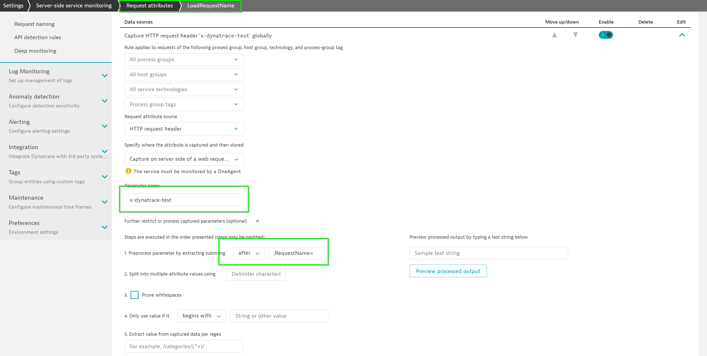

This lab is the first session of the AIOps Enablement Series for ANZ Bank. This track focuses on the Automate Feedback, which relates to how you could integate Dynatrace with load testing tools to create Performance as a service.

Other useful commands:
- To view the downloaded images on localhost:
docker images - To remove a particular image:
docker rmi <IMAGE-NAME> - To stop a docker:
docker stop <CONTAINER-ID> - To remove a docker:
docker rm <CONTAINER-ID> - To run a docker in interactive bash:
docker run -it <CONTAINER> /bin/bash - To delete all the unused images:
docker system prune -a -f - To pull a particular image:
docker pull <docker-image> - Jenkins pipeline: Command:
https://github.com/nikhilgoenkatech/JenkinsBankApp
In this exercise, we will deploy the OneAgent to a Linux instance and let the OneAgent discover what is running in that instance.
Download the OneAgent
Use PuTTy (Windows) or Terminal (Mac), ssh into the instance (IP address using the your PEM Key)
Open your browser and access the Dynatrace URL.
Select Deploy Dynatrace from the navigation menu.

Click the Start installation button and select Linux.


Choose the installer type from the drop-down list (we'll use the default x86/64). Use the Linux shell script installer on any Linux system that's supported by Dynatrace, regardless of the packaging system your distribution depends on.
Copy the command provided in the "Use this command on the target host" text field. Paste the command into your terminal window and execute it.

Example:
$ wget -O Dynatrace-OneAgent-Linux-1.171.252.sh <follow screen shot above>
--2019-08-07 10:17:45-- https://<URL>
Resolving <URL>... <IP>
Connecting to <URL> | <IP>|:443... connected.
HTTP request sent, awaiting response... 200 OK
Length: 139134801 (133M) [application/octet-stream]
Saving to: ‘Dynatrace-OneAgent-Linux-1.171.252.sh'
100%[======================================>] 139,134,801 84.3MB/s in 1.6s
2019-08-07 10:17:47 (84.3 MB/s) - ‘Dynatrace-OneAgent-Linux-1.171.252.sh' saved [139134801/139134801]
$
Execute the installation script
(Optional) Once the download is complete, you can verify the signature by copying the command from the "Verify signature" text field, then pasting the command into your terminal window and executing it. Make sure your system is up to date, especially SSL and related certificate libraries.
Copy the command that's provided in the text box "And run the installer with root rights" text field.

Paste the command into your terminal window and execute it. You'll need to make the script executable before you can run it.
Note that you'll need root access. You can use sudo to run the installation script. To do this, type the following command into the directory where you downloaded the installation script.
Example:
$ sudo /bin/sh Dynatrace-OneAgent-Linux-1.171.252.sh
10:21:42 Checking root privileges...
10:21:42 OK
10:21:42 Installation started ...
...
10:22:14 Starting agents...
10:22:14 oneagent service started
10:22:14 Checking if agent is connected to the server...
10:22:16 Dynatrace OneAgent has successfully connected to Dynatrace Cluster Node. After completing Dynatrace OneAgent installation on this machine, please return to your browser to complete the remainder of the installation.
$
Exploring Dynatrace
Login to your Dynatrace environment and explore around Smartscape, Host View.
Go to Host > EC2-instance > SampleOnlineBankProduction (Process)
You will discover that Dynatrace automatically monitors your host metrics, processes but services are missing.

Restarting SampleBankApp
For Dynatrace to get Services (code level visibility), you will need to restart the Application services. Since the application is containerized, the easiest way to do that is to restart the docker containers.
To list all the docker containers, run docker ps -a
Run the following command to restart docker restart SampleBankApp to restart the Sample Banking App
To check and verify that SampleBankApp container has restarted, run docker ps -a again

Automatic Service Detection
As OneAgent automatically monitors your host, changes are reflected in real-time. Back in your Process screen, you will find the process updated with services.

Within your Host View, dropdown the Properties and Tags and you will get a list of various metadata associated with the host created. Locate the Public IP Address and copy its value.
Open up your web browser and access the sample app with <IP address>:4000/login

Login to Sample Bank App
Access the banking App with the either of the below credentials
- Username: guestuser1@mybank.com
- Password: GuestUser12@
OR
- Username: guestuser2@mybank.com
- Password: GuestUser12@
For the purposes of the lab, we will be demo with the Jmeter thick client. The same capabilites will be triggered and used within the labs using CLI.



You can use any (or multiple) HTTP headers or HTTP parameters to pass context information. The extraction rules can be configured via Settings > Server-side service monitoring > Request attributes.
The header x-dynatrace-test is used in the following examples with the following set of key/value pairs for the header:
Code | Description |
VU | Virtual User ID of the unique user who sent the request. |
SI | Source ID identifies the product that triggered the request (JMeter, LoadRunner, Neotys, or other) |
TSN | Test Step Name is a logical test step within your load testing script (for example, Login or Add to cart. |
LSN | Load Script Name - name of the load testing script. This groups a set of test steps that make up a multi-step transaction (for example, an online purchase). |
LTN | The Load Test Name uniquely identifies a test execution (for example, 6h Load Test – June 25) |
PC | Page Context provides information about the document that is loaded in the currently processed page. |
Setup Request Attributes
Go to Settings > Server-side service monitoring > Request Attributes
Click on Define a new request attribute and use the following:
- Request attribute name – LoadTestID
- Request attribute source – HTTP Request Header
- Parameter name -
x-dynatrace-test - Expand out Further restrict or process captured parameters (optional)
- Preprocess parameter by extracting substring between (dropdown) and
LoadTestID=;in field - Click on Save

Click on Define a new request attribute and use the following:
- Request attribute name – LoadTestName
- Request attribute source – HTTP Request header
- Parameter name -
x-dynatrace-test - Expand out Further restrict or process captured parameters (optional)
- Preprocess parameter by extracting substring after (dropdown) and
;RequestName=in field - Click on Save

Simulate load from JMeter
Using the .JMX load from the local folder, access the simulate the requests with the local .JMX file
To run load test using JMeter, the following format is used:
jmeter -n -t [jmx file] -l [results file]
- -n indicates nonGUI mode
- -t JMX test plan that you plan to run
- -l logfile where the execution would be logged.
To run the Test-Plan available in /home/ubuntu/directory, execute the below command:
./jmeter -n -t /home/ubuntu/ACMD1Workshops/additional_resources/app_docker/scripts/Smoke-test-Jmeter.jmx -l output.log

Exploring Dynatrace
Once you have triggered your load, you can also see the load test events appearing within your event section in your host view.

Dynatrace's platform allows event information to be ingested via various means. If you are using a load test tool like jMeter, the jmx script above should apply for most. Alternatively, you can also send events in via a Python script. Below is an example of using that.

Run the command below to trigger the script
cd /home/ubuntu/ACMD1Workshops/additional_resources/app_docker/scripts/
./smoke-test.py
We hope you enjoyed this lab and found it useful. We would love your feedback!